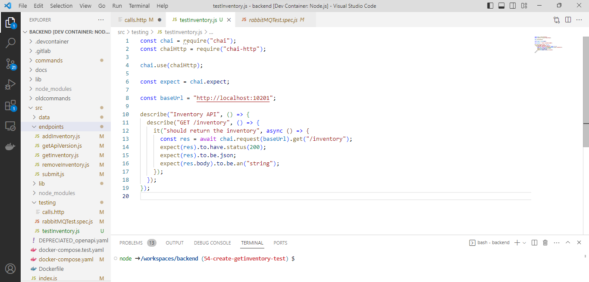
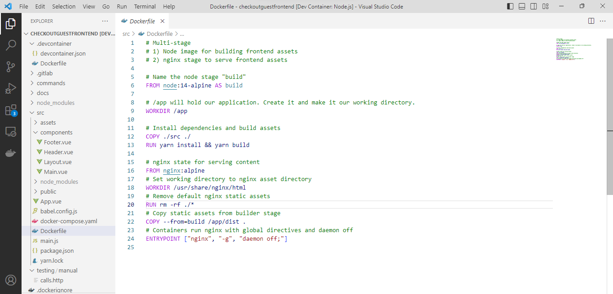
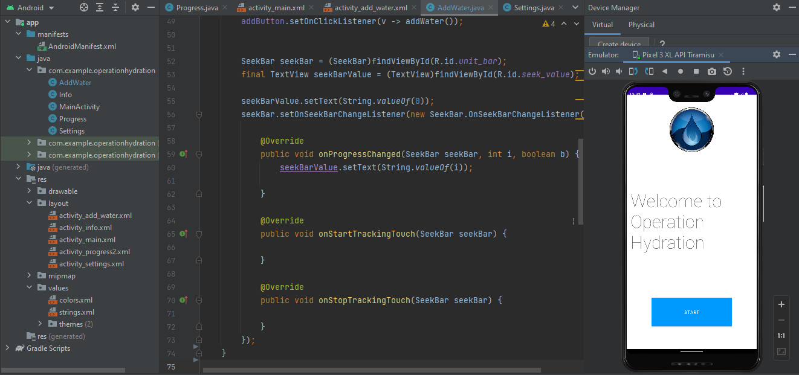
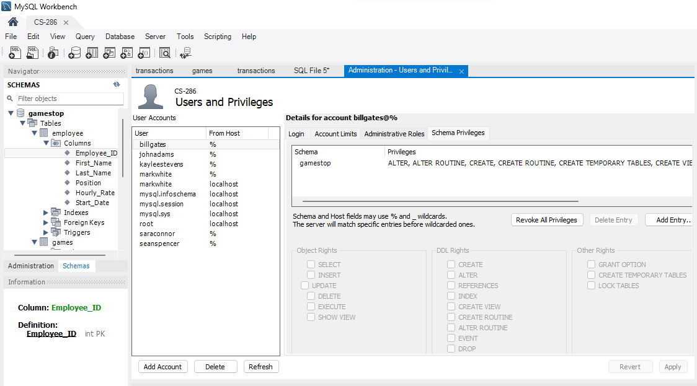

Contact
Ryan Klenk
Reach me at ryanjklenk@gmail.com
I'm a Software Engineer with a background in developing embedded systems, flight control software, and internal tools for
complex hardware platforms. I hold a Bachelor's degree in Computer Science from Worcester State University and have professional
experience working on advanced unmanned aerial systems, including the KARGO UAV program at Kaman Air Vehicles.
My technical skill set includes C, C++, Python, C#/.NET, shell scripting, and DevOps tools. I've contributed to real-time and
mission-critical software systems, supported system integration and testing, and created automation tools to improve engineering
workflows. I'm passionate about building efficient, reliable software for high-impact applications.
Software Engineer – Kaman Air Vehicles (March 2023 – April 2025)
Contributed to the development of the KARGO UAV, a medium-lift autonomous unmanned aerial vehicle (UAV)
designed to support expeditionary logistics missions for both the U.S. military and commercial clients.
As part of a multidisciplinary engineering team, I focused on embedded systems, flight control, and internal tooling to support
aircraft performance, autonomy, and system integration. I developed embedded C/C++ software for flight control and vehicle
management computers. I also supported system integration testing, evaluated Linux-based embedded systems
for avionics, and assisted in implementing a secure satellite-based beyond line of sight (BLOS) communication link between the
aircraft and ground station.
Additional work included modifying in-house Windows-based C#/.NET tools for hardware testing and simulation, writing Python and
shell scripts to automate software processes, and contributing to the development of a custom triplex autopilot using ArduPilot
and real-time microcontroller firmware.
LibreFoodPantry
LibreFoodPantry is an open-source software that helps local food pantries enhance their services by managing operations and facilitating coordination with food banks. As part of a team of five peers, I focused on the inventory subsystem, which was one of the three subsystems of the system. Our work involved developing three front-end components, a back-end system, and the corresponding API for seamless communication. To streamline our development process, we utilized GitLab for hosting the project and implementing a CI/CD pipeline. Additionally, we employed Docker for code development, ensuring compatibility across various machines. Our team embraced the Scrum framework for efficient organization and collaboration. Within the project, I contributed to both the front-end and back-end development. Some notable accomplishments include updating sections of the front-end and back-end to meet the product owner's specifications, as well as writing tests for the back-end.
  LibreFoodPantry.orgOperation Hydration - App
I developed an Android app designed to help users improve their health by tracking their water intake throughout the day. The app enables users to set personalized water consumption goals, either manually or by leveraging calculations based on their age and weight. Users can input their water intake in either cups or ounces, with automatic conversion to cups for progress tracking. The app was developed using Android Studio and Java.
Restaurant Project
In this project I created a menu based system for a restaurant. The user can view the restaurant's menu as well as add to it or remove items from it. This system also allows for orders to be taken. The orders can be viewed and then marked as the customer has been served to remove them from the list. I utilized Java as the programming language, implementing multiple data structures and object-oriented design principles to create the system.
Store Management System
This project involved creating a database in MySQL and developing a Java application to access and manipulate the data. I designed and populated the database with the information needed for a video game store, including inventory, transactions, employee information, and customer information. Additionally, I implemented role based access which include the roles of store clerk, manager, and owner. The Java application has a CLI-based interface, allowing users to navigate to sub-menus and perform actions based on their privileges after logging in.
Reach me at ryanjklenk@gmail.com